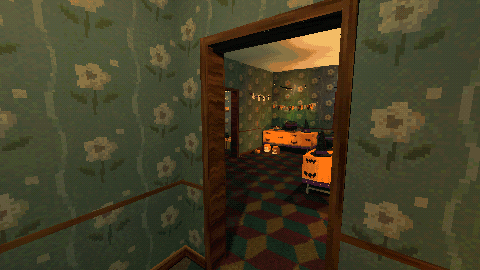

Tutorials › Switch a Room Between Festive and Creepy
How to Switch a Room Between Festive and Creepy in Godot 4
One key turns a Halloween party into its abandoned aftermath.

Build a Halloween party and what is left when it is over in one scene, and switch between them with one call: each setup is placed twice, each copy in its side's group, and the hidden side is out of sight, physics and processing. Plus swapping one item for its other state, and a flicker that stays within three bright flashes a second.
Script: festive_creepy.gd (MIT) · Godot 4.3 or newer · its folder on GitHub
How to use it
place_setup(name, position, turn)puts both sides of a setup in the level;show_side(0)shows the festive side,show_side(1)the creepy one.creepy_of(variant)gives an item's other state from the pack's data.make_flicker(lamp, pattern)makes any light flicker ("candle", "bulb" or "fluorescent").
What it needs
- Setups as two scenes each,
<name>__festive.tscnand<name>__creepy.tscn; forcreepy_of, the pack'sdata/props.json; formake_flicker, the series'flicker_light.gd.
Try it free
The Haunted PSX Free Sampler has a small setup on both sides (halloween_wall), 4 decorations, their data and the flicker script.
How it was tested
Checked with godot --headless --check-only in Godot 4.3 and 4.7.2.
The code
extends Node3D
## How to Switch a Room Between Festive and Creepy in Godot 4
## Cordatix Godot 4 PSX tutorials, MIT licensed: https://github.com/GoldenSparrow-Dev/cordatix-godot-psx-tutorials
## The devlog: https://cordatix.itch.io/haunted-psx-halloween-takeover/devlog/1718867/how-to-switch-a-room-between-festive-and-creepy-in-godot-4-haunted-psx-halloween-takeover
const PACK := "res://cordatix/haunted_psx_halloween_takeover/"
const SIDES := ["festive", "creepy"]
var side := 0
## Place a ready-made setup once per side, each copy in a group named after its side.
func place_setup(setup_name: String, at: Vector3, turn_deg := 0.0) -> void:
for s in SIDES:
var node: Node3D = load(PACK + "setups/" + setup_name + "__" + s + ".tscn").instantiate()
node.position = at
node.rotation_degrees.y = turn_deg
node.add_to_group("cordatix_side_" + s)
add_child(node)
show_side(side)
## Show one side and switch the other off entirely: hidden, and out of physics and processing, so two
## candy bowls never share one place and the hidden side's lights do not flicker.
func show_side(i: int) -> void:
side = i
for k in SIDES.size():
for n in get_tree().get_nodes_in_group("cordatix_side_" + SIDES[k]):
(n as Node3D).visible = k == i
n.process_mode = Node.PROCESS_MODE_INHERIT if k == i else Node.PROCESS_MODE_DISABLED
## The creepy pair of one variant, from the pack's data: swap a single item in place.
func creepy_of(variant: String) -> String:
var data: Dictionary = JSON.parse_string(FileAccess.get_file_as_string(PACK + "data/props.json"))
for p in data["props"]:
if p["pairs"].has(variant):
return p["pairs"][variant]
return variant
## Make any lamp flicker with the shared script. Its default patterns (candle, bulb, fluorescent) stay within
## 3 bright flashes a second; "harsh" can go past it, use it only with a warning. set_flicker(false) holds the
## light steady (offer it in your options menu).
func make_flicker(lamp: Light3D, pattern := "bulb") -> Node:
var f: Node = load("res://cordatix/shared/scripts/flicker_light.gd").new()
f.name = "Flicker"
f.set("mode", pattern)
f.set("light", NodePath(".."))
f.set("glow", NodePath(""))
lamp.add_child(f)
return f
The devlog and the pack
The step-by-step walkthrough is the devlog How to Switch a Room Between Festive and Creepy in Godot 4 (Haunted PSX Halloween Takeover) on itch.io, written for Haunted PSX Halloween Takeover, a PS1-style asset pack by Cordatix for Godot 4, Unity, Unreal and Blender.